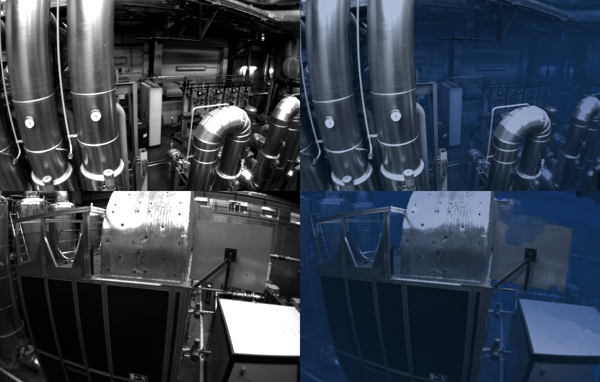
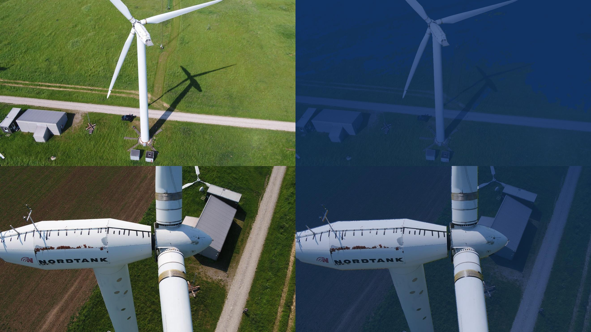
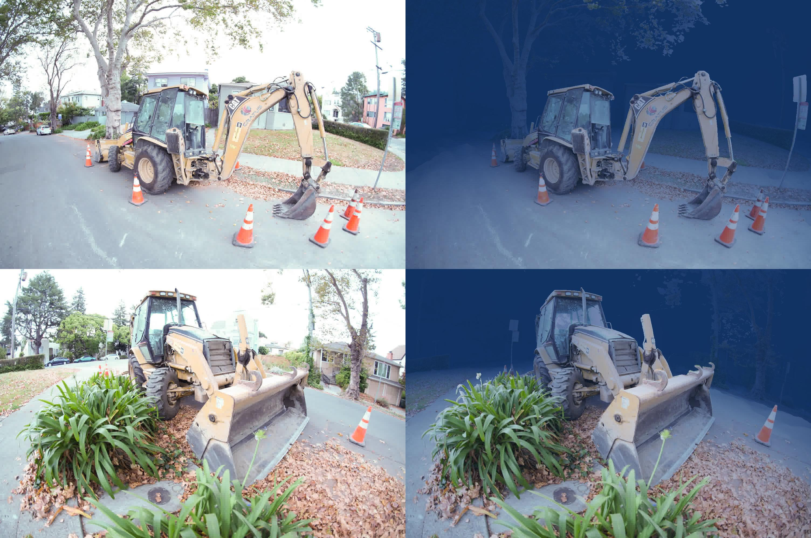

Results
This section shows off some results that can be achieved with this repository. To get a sense of the capabilities and limitations of the implemented approach, have a look at some of them!🔍
Renderings
This are some results that show the reconstructed scene on the left and the clean scene on the right.
Click to see renderings of IUI3-RedSea
Click to see renderings of Curasao
Click to see renderings of JapaneseGradens-RedSea [sic]
The implementation can also be used to render depthmaps and object weight accumulation maps of the scene. The following videos show the depthmaps on the left and the object weight accumulation maps on the right. From the object accumulation maps, we can nicely see, that the model is able to seperate between objects (red hue, indicating high accumulation) and the water (blue hue, indicating low accumulation).
Click to see renderings of IUI3-RedSea
Click to see renderings of Curasao
Click to see renderings of JapaneseGradens-RedSea [sic]
The model also allows to render only the backscatter of the scene and the clear scene but with attenuation effects.
Synthetic Water Effects
Some results of adding synthetic water to scenes are visualized below:
Machine hall dataset:
Windturbine dataset:
Dozer scene:
Plane scene: